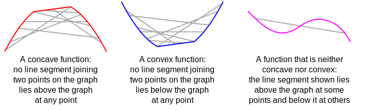
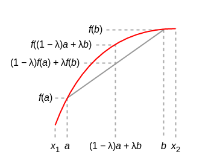

This blog post aims to prove the Jensen's inequality, which states that for a random variable x and a concave function f(x), the following equation holds:
A function of a single variable is concave, if every line segment joining two points on its graph does not lie above the graph at any point. Symmetrically, a function of a single variable is convex if every line segment joining two points on its graph does not lie below the graph at any point.

concave, convex, neither

concave function
\texttt{concave: }$f((1-\lambda)a + \lambda b) \geq (1-\lambda)f(a) + \lambda f(b)$
\texttt{convex: }$f((1-\lambda)a + \lambda b) \leq (1-\lambda)f(a) + \lambda f(b)$
Proof:
Suppose f is differentiable. The function f is concave if, for any x and y.
f(x) \leq f(y) + (x-y) f^{\prime}(y)
Let x = X and y = E[X].
We can write:
f(X) \leq f(E[X]) + (X - E[X])f^{\prime}(E[X])
This inequality is true for all X, so we can take expectation on both sides to get